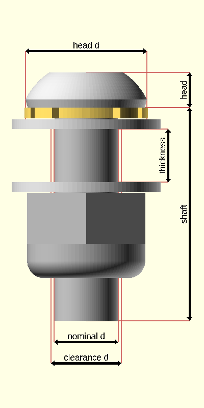
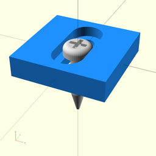

package vitamins/screw
Dependencies
graph LR
A1[vitamins/screw] --o|include| A2[foundation/dimensions]
A1 --o|include| A3[foundation/unsafe_defs]
A1 --o|use| A4[foundation/3d-engine]
A1 --o|use| A5[foundation/bbox-engine]
A1 --o|use| A6[foundation/hole-engine]
A1 --o|use| A7[foundation/mngm-engine]
A1 --o|use| A8[foundation/type-engine]Screw implementation file for OpenSCAD Foundation Library.
Copyright © 2021, Giampiero Gabbiani (giampiero@gabbiani.org)
SPDX-License-Identifier: GPL-3.0-or-later
Variables
variable FL_SCREW_NS
Default:
"screw"
screw namespace
variable FL_SCREW_SPECS_INVENTORY
Default:
[for(list=screw_lists,screw=list)if(screw)screw]
Screw specifications inventory in NopSCADlib format.
Functions
function fl_Screw
Syntax:
fl_Screw(nop,length,longer_than=0,shorter_than,head_spring,head_washer,thickness,nut_washer,nut_spring,nut)
Screw constructor: build a screw object from specifications and length.
Parameters:
nop
NopSCADlib screw specifications
length
Shaft length
longer_than
Shaft length longer or equal than «longer_than»
shorter_than
Shaft length shorter or equal than «shorter_than»
head_spring
undef, "spring" or "star"
head_washer
undef, "default" or "penny"
thickness
material thickness
nut_washer
undef, "default" or "penny"
nut_spring
undef, "spring" or "star"
nut
undef, "default" or "nyloc"
function fl_ScrewInventory
Syntax:
fl_ScrewInventory(specs=FL_SCREW_SPECS_INVENTORY,name,nominal,head_type,head_name,length,longer_than=0,shorter_than,head_spring,head_washer,thickness,nut_washer,nut_spring,nut)
Builds a screw object inventory from specifications selection and shaft length.
Parameters:
specs
mandatory search inventory
name
screw name, ignored when undef
nominal
nominal ⌀, when 0 or undef is ignored
head_type
Either a scalar or a list with each element equal to one of the following:
- hs_cap
- hs_pan
- hs_cs
- hs_hex
- hs_grub
- hs_cs_cap
- hs_dome
head_name
head name is one of the following:
- "cap"
- "pan"
- "cs"
- "hex"
- "grub"
- "cs_cap"
- "dome"
length
Shaft exact length
longer_than
Shaft length longer or equal to «longer_then»
shorter_than
Shaft length shorter or equal to «shorter_then»
head_spring
undef, "spring" or "star"
head_washer
undef, "default" or "penny"
thickness
material thickness
nut_washer
undef, "default" or "penny"
nut_spring
undef, "spring" or "star"
nut
undef, "default" or "nyloc"
function fl_opt_Screw
Syntax:
fl_opt_Screw(nop,length,longer_than=0,shorter_than,head_spring,head_washer,thickness,nut_washer,nut_spring,nut)
Parameters:
nop
NopSCADlib screw specifications
length
Shaft length
longer_than
Shaft length longer or equal than «longer_then»
shorter_than
Shaft length shorter or equal than «shorter_then»
head_spring
undef, "spring" or "star"
head_washer
undef, "default" or "penny"
thickness
material thickness
nut_washer
undef, "default" or "penny"
nut_spring
undef, "spring" or "star"
nut
undef, "default" or "nyloc"
function fl_screw_AssemblyStack
Syntax:
Screw assembly stack.
The screw assembly stack is a stack of accessory elements mounted on a screw when finally assembled. This type represents a 'generic' not exhaustive logic considering the following elements in a top-down order:
- screw head
- optional head spring or star washer
- optional head washer
- optional material thickness
- optional nut washer
- optional nut spring or star washer
- optional nut
The returned list includes all the thicknesses that contribute to determining the minimum necessary screw shank length:
- exact length of the shank resulting from the sum of the thicknesses of each element of the stack
- nearest standard screw length ≥ to the previous one
- head spring or star washer thickness (0 if not present)
- head washer thickness (0 if not present)
- material thickness as passed to the function (0 if not present)
- optional nut washer thickness (0 if not present)
- optional nut spring or star washer thickness (0 if not present)
- optional nut thickness (0 if not present)
The assembly stack can be built in two ways:
- without a prefixed length («shank» parameter set to 0 or undef)
- with a prefixed shank («shank» parameter ≠ 0)
Below an example of a full assembly stack:

Parameters:
type
NopSCADlib screw type
shaft
screw length, when undef or 0 the length is calculated programmatically
head_spring
undef, "spring" or "star"
head_washer
undef, "default" or "penny"
thickness
material thickness
nut_washer
undef, "default" or "penny"
nut_spring
undef, "spring" or "star"
nut
undef, "default" or "nyloc"
function fl_screw_clearanceD
Syntax:
Returns the hole ⌀ used during "clearance" FL_DRILL according to the following formula:
hole ⌀ = nominal ⌀ + 2 * $fl_clearance
The nominal ⌀ is the screw shaft ⌀ (i.e. the diameter of the screw without the head).
The $fl_clearance parameter is used to add a clearance to the hole ⌀. This is useful when the screw is not a perfect fit in the hole.
:memo: NOTE: when $fl_clearance is undef, the NopSCADlib clearance is used for the hole ⌀ calculation.
Context variables:
| name | Context | Description |
|---|---|---|
| $fl_clearance | Parameter | See also fl_parm_clearance(). |
function fl_screw_csh
Syntax:
Screw counter sink height (i.e. how far a counter sink head will go into a straight hole ⌀ «d»). More concretely its an alias of the nopscadlib function screw_head_depth().
function fl_screw_headD
Syntax:
Returns the head ⌀
function fl_screw_headDepth
Syntax:
How far a counter sink head will go into a straight hole ⌀ «d»
function fl_screw_headH
Syntax:
Returns the head height
function fl_screw_headR
Syntax:
Returns the head radius
function fl_screw_headType
Syntax:
Returns the head style (hs_cap, hs_pan, hs_cs, hs_hex, hs_grub, hs_cs_cap or hs_dome)
function fl_screw_nut
Syntax:
Returns the default nut
function fl_screw_shaft
Syntax:
Screw shaft length (i.e. the length of the screw without the head)
function fl_screw_specs
Syntax:
screw specifications in NopSCADlib format
function fl_screw_specs_select
Syntax:
fl_screw_specs_select(inventory=FL_SCREW_SPECS_INVENTORY,name,nominal,head_type,head_name,nut,washer)
Return a list of screw specifications matching the passed properties from «inventory».
:memo: NOTE: when a parameter is undef the corresponding property is not checked.
Parameters:
inventory
mandatory search inventory
name
screw name, ignored when undef
nominal
nominal ⌀, when 0 or undef is ignored
head_type
Either a scalar or a list with each element equal to one of the following:
- hs_cap
- hs_pan
- hs_cs
- hs_hex
- hs_grub
- hs_cs_cap
- hs_dome
head_name
head name is one of the following:
- "cap"
- "pan"
- "cs"
- "hex"
- "grub"
- "cs_cap"
- "dome"
nut
nut support:
- undef : no nut required
- "default": default nut required
- "nyloc" : nyloc nut required
washer
washer support, is either a scalar or a list with each element equal to one of:
- "default": default washer required
- "penny" : penny washer required
- "spring" : spring washer required
- "star" : star washer required
:memo: NOTE: if undef or [] no washer support required
function fl_screw_threadD
Syntax:
Screw thread ⌀
function fl_screw_threadMax
Syntax:
Max screw thread length
Modules
module fl_screw
Syntax:
fl_screw(verbs=FL_ADD,type,head_spring,head_washer,nut_washer,nut_spring,nut,dri_type="clearance",cut_dirs,cut_drift=0,direction,octant)
Context variables:
| name | Context | Description |
|---|---|---|
| $fl_clearance | Parameter | used during FL_DRILL. See also fl_parm_clearance() |
| $fl_thickness | Parameter | thickness during FL_ASSEMBLY and FL_CUTOUT. See also fl_parm_thickness() |
| $fl_tolerance | Parameter | used during FL_FOOTPRINT. See also fl_parm_tolerance() |
Parameters:
verbs
supported verbs: FL_ADD, FL_ASSEMBLY, FL_BBOX, FL_DRILL, FL_FOOTPRINT, FL_LAYOUT
type
NopSCADlib screw type
head_spring
undef, "spring" or "star"
head_washer
undef, "default", "penny" or "nylon"
nut_washer
undef, "default", "penny" or "nylon"
nut_spring
undef, "spring" or "star"
nut
undef, "default" or "nyloc"
dri_type
drill type: "clearance" or "tap"
cut_dirs
FL_CUTOUT direction list, if undef then the preferred cutout direction
attribute is used.
cut_drift
translation applied to cutout
direction
desired direction [director,rotation], native direction when undef ([+X+Y+Z])
octant
when undef native positioning is used
module fl_screw_holes
Syntax:
fl_screw_holes(holes,enable=[-X,+X,-Y,+Y,-Z,+Z],depth=0,nop_screw,type="clearance",tolerance=0,countersunk=false)
Screw driven hole execution. The main difference between this module and fl_lay_holes{} is that the FL_DRILL verb is delegated to screws.
See fl_hole_Context{} for context variables passed to children().
Runtime environment:
- $fl_thickness: added to the hole depth
:memo: NOTE: supported normals are x,y or z semi-axis ONLY
Parameters:
holes
list of hole specs
enable
enabled normals in floating semi-axis list form
depth
pass-through hole depth
nop_screw
fallback NopSCADlib screw specs
type
drill type ("clearance" or "tap")
module fl_screw_rail
Syntax:
fl_screw_rail(length,screw)
Screw version of fl_rail{}.
Differently from fl_rail{} this module automatically take care of the screw geometry for the creation of a proper rail.

Context variables:
| name | Context | Description |
|---|---|---|
| $fl_clearance | Parameter | defines the track clearance. See also fl_parm_clearance() |
| $fl_thickness | Parameter | used for screw FL_CUTOUT. See also fl_parm_thickness() |
Parameters:
length
when undef or 0 rail degenerates into children()
screw
OFL screw used for the rail